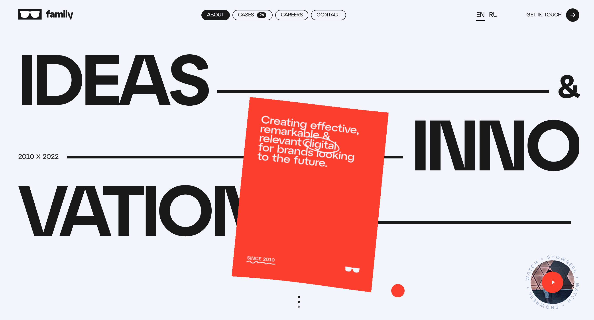

DART 349: INTRODUCTION TO WEB DESIGN
Website 1
Website 2 *
Website 3
Website 2:
creative.family/en
“Family is a digital agency that creating effective, remarkable & relevant digital for brands”
design:
The contrast and bold style of the website makes the website style very appealing and showcases the vibe of the agency.
usability:
The disappearance of the navigation bar is thoughtful in the cases of scrolling through the site,
but annoying when the user must make an action before being able to interact with it ( have to scroll up to bring the nav bar down)
content:
The information is straightforward and easy to digest (home page). The cases are also neatly presented and informative.
creativity:
The stylization is not unique, but the interactive elements gave some fun unexpected surprises.
